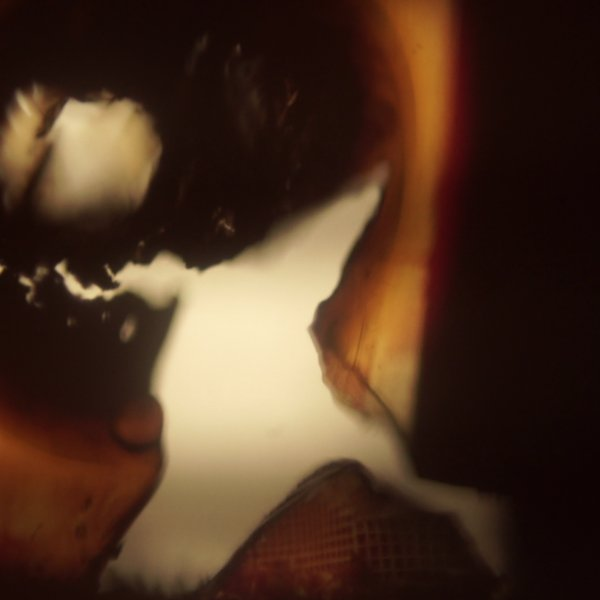
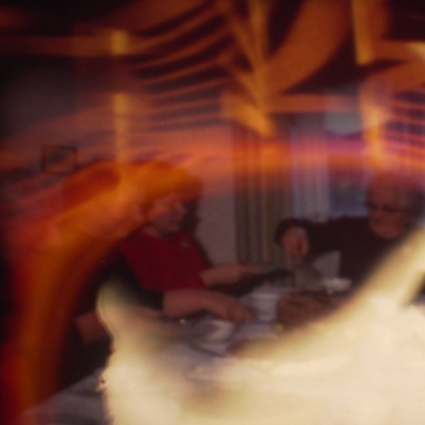
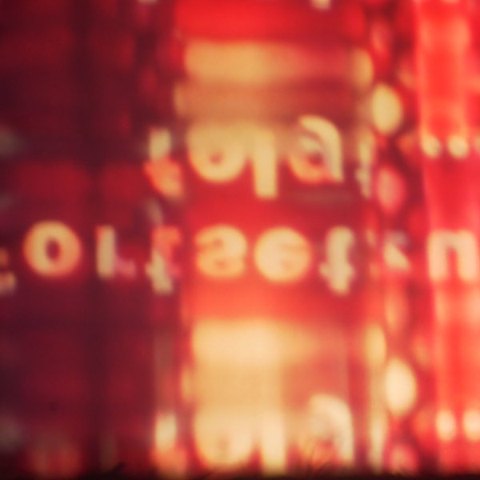
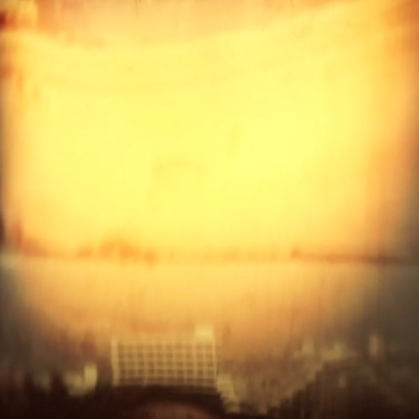
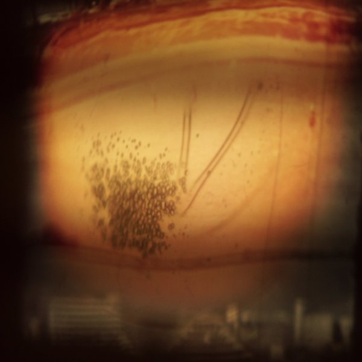

Performance for film and tapes
Field recording based sound meets projected film images: everyday scenes and memories of journeys, whose reality and sense of time are altered live. A primitive arte povera of cinema, an irreversible movie that can never be played the same way twice.





